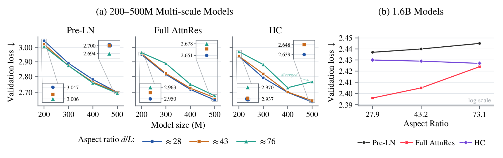
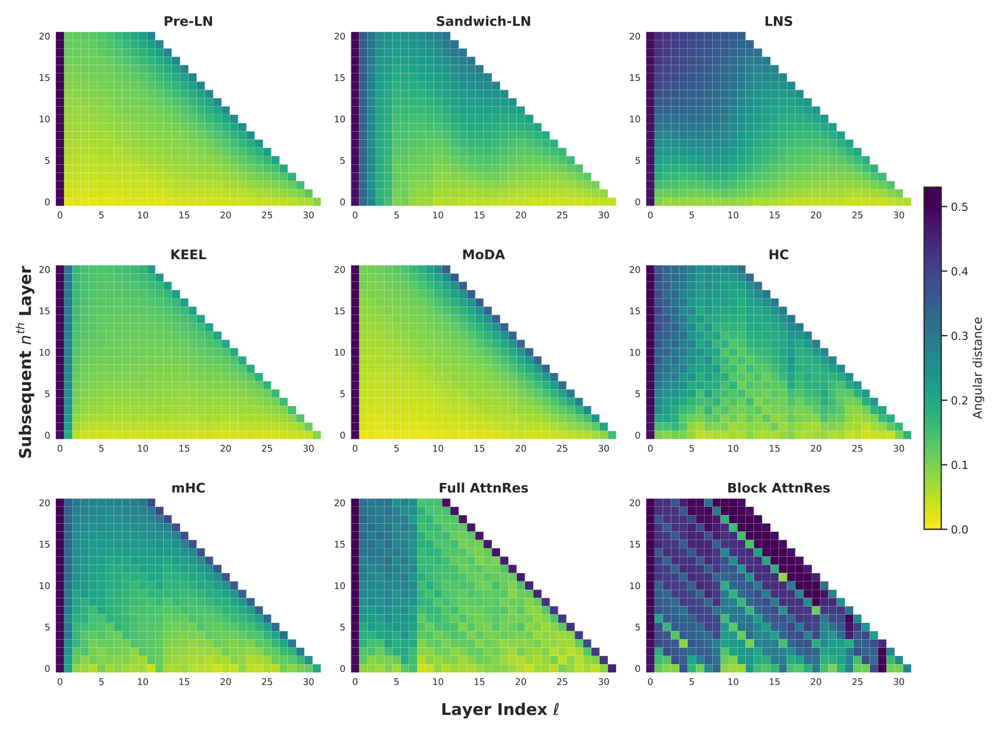
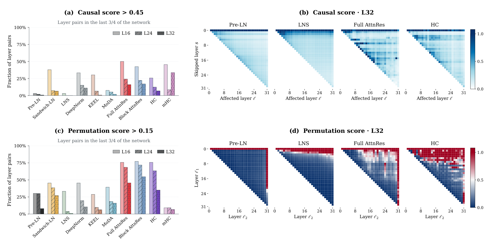
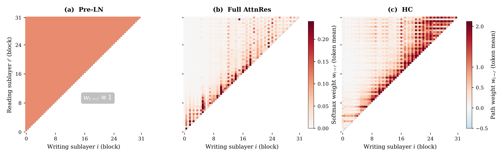
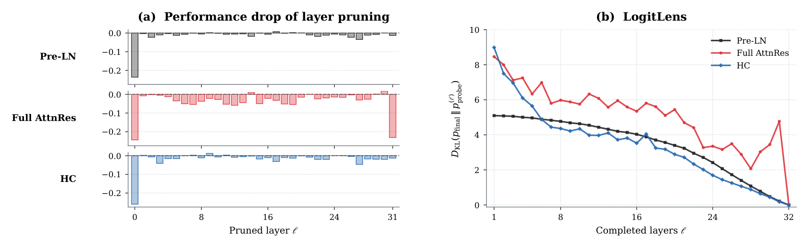
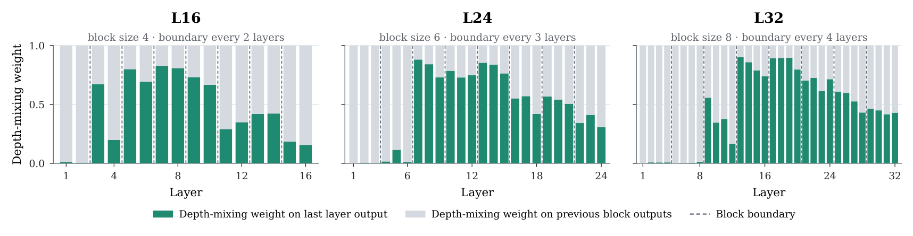
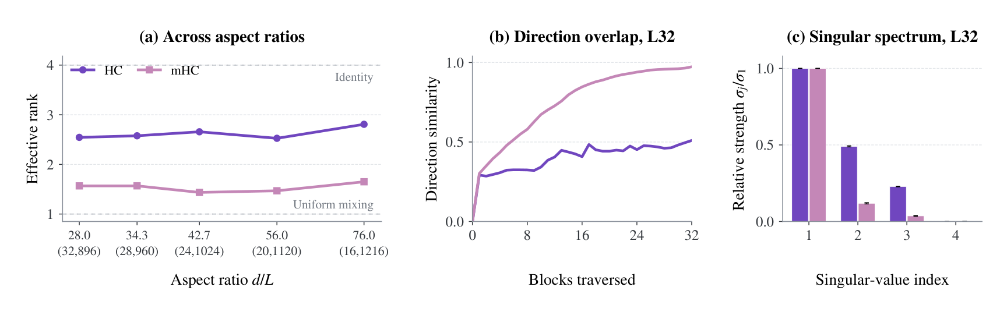
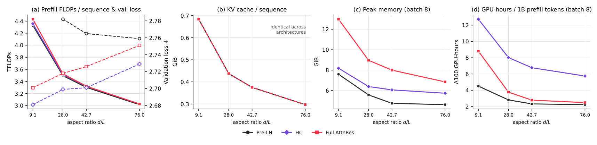

Pre-LN does not benefit from depth.
Pre-LN and its normalization variants stay flat or get worse as capacity shifts to depth. Their optima sit at large aspect ratios of 42.7–76.0.
See the main results ↗Which architectural designs make additional depth computationally effective?
A controlled benchmark of 10 residual designs at a fixed parameter budget.
1ELLIS Institute Tübingen2Max Planck Institute for Intelligent Systems 3Tübingen AI Center4The Chinese University of Hong Kong
Abstract
At a fixed parameter budget, making Transformers deeper and narrower hurts Pre-LN and most of its normalization variants, but consistently helps HC and Full AttnRes, even at an extreme aspect ratio of 9.1 with \(d_\text{model} = 640\) and \(n_\text{layer} = 70\). Residual connection design decides whether depth is a real scaling axis.
Depth is a natural way to increase the computational capacity of Transformers, yet the contribution of deeper layers can diminish as depth grows larger. Recent approaches enhance normalization (e.g., LayerNorm Scaling) or residual connections (e.g., mHC, AttnRes) to enable better information flow and depth utilization. However, it remains unclear whether they truly translate increased architectural depth into effective computational depth, and whether their reported gains stem from better access to information across depth, or from unaccounted-for confounding factors.
We introduce DepthBench, a controlled benchmark for studying computational depth across architectures. We systematically vary the width–depth aspect ratio (\(d_\text{model}/n_\text{layer}\)) from shallow–wide to deep–narrow shapes, while keeping the model size and pre-training recipe fixed.
Across 10 representative architectures, the benefit of allocating more capacity to depth is strongly architecture-dependent. Standard Pre-LN and most of its norm- and scaling-based variants provide little benefit and can even degrade as models become deeper and narrower, whereas HC and Full AttnRes improve consistently even at extreme deep shapes. These gains extend beyond pre-training loss to domain-specific evaluations, and controlled layer-level analyses show they are associated with more effective utilization of additional layers.
Overall, our results identify residual connection design as a key determinant of whether depth can serve as a meaningful scaling axis.
Key findings
Pre-LN and its normalization variants stay flat or get worse as capacity shifts to depth. Their optima sit at large aspect ratios of 42.7–76.0.
See the main results ↗Both get better as models become deeper and narrower, even at an extreme aspect ratio of 9.1 (d = 640, L = 70). Gains carry over to code, STEM and math.
Explore the curves ↗Full AttnRes and HC preserve heterogeneous, layer-specific transformations across layers, unlike the increasingly homogeneous deep-layer representations in Pre-LN.
See the layer analysis ↗Even at fixed parameters, deeper shapes raise prefill FLOPs, KV cache and wall-clock cost. Realizing the gains needs architecture–system co-design.
See the trade-off ↗Benchmark design
Simply adding layers at a fixed width also adds parameters and compute, confounding depth with scale. DepthBench instead treats depth as a capacity-allocation choice: for each depth we pick the width that keeps the parameter budget matched, then train every architecture on the same data with the same recipe.
Values from Table 3 of the paper (16 attention heads; total size within ±3% of 405M). Drag to compare shapes.
All models are trained from scratch with OLMo-core on FineWeb-Edu at 20 tokens per parameter (8B tokens at 400M, 32B at 1.6B), with sequence length 2048 and ~1M-token batches. Learning rates are swept per architecture and each configuration is reported at its best learning rate.
Main benchmark at ≈400M total (7 shapes, d/L 9.1–76.0); an iso-backbone control at ≈300M backbone; a multi-scale suite from 200M to 500M; and validation at 1.6B with a Qwen3-style GQA backbone.
Why depth costs width
With the budget \(N\) held fixed, more layers \(L\) force a smaller hidden size \(d\).
| Family | Method | Residual update | Weight | Source |
|---|---|---|---|---|
| Baseline | Pre-LN | \(h_\ell = h_{\ell-1} + F_\ell(\mathrm{LN}(h_{\ell-1}))\) | Fixed | \(h_{\ell-1}\) |
| LayerNorm variants | Sandwich-LN | \(h_\ell = h_{\ell-1} + \mathrm{LN}_\text{out}(F_\ell(\mathrm{LN}_\text{in}(h_{\ell-1})))\) | Fixed | \(h_{\ell-1}\) |
| LNS | \(h_\ell = h_{\ell-1} + F_\ell\!\left(\tfrac{1}{\sqrt{\ell}}\mathrm{LN}(h_{\ell-1})\right)\) | Fixed | \(h_{\ell-1}\) | |
| DeepNorm | \(h_\ell = \mathrm{LN}(\alpha h_{\ell-1} + F_\ell(h_{\ell-1}))\) | Fixed | \(h_{\ell-1}\) | |
| KEEL | \(h_\ell = \mathrm{LN}(\alpha h_{\ell-1} + F_\ell(\mathrm{LN}(h_{\ell-1})))\) | Fixed | \(h_{\ell-1}\) | |
| Multi-stream residuals | HC | \(H_\ell = H_{\ell-1}A_\ell + F_\ell(\mathrm{LN}(H_{\ell-1}\alpha_\ell))\,\beta_\ell^\top\) | Dynamic | \(m\) residual streams |
| mHC | \(H_\ell = H_{\ell-1}\,\mathrm{Sinkhorn}(\widetilde{A}_\ell) + F_\ell(\mathrm{LN}(H_{\ell-1}\,\sigma(\widetilde{\alpha}_\ell)))\,2\sigma(\widetilde{\beta}_\ell^{\top})\) | Dynamic | \(m\) residual streams | |
| Cross-layer access | Full AttnRes | \(h_\ell \propto \sum_{i=0}^{\ell-1}\phi(w_\ell, v_i)\,v_i,\quad v_0 = h_1,\ v_{i\ge 1} = f_i(h_i)\) | Dynamic | \([h_1,\dots,h_{\ell-1}]\) |
| Block AttnRes | \(h_\ell \propto \sum_{i=0}^{n-1}\phi(w_\ell, v_i)\,v_i + \phi(w_\ell, v_n^{j})\,v_n^{j}\) | Dynamic | \([v_0,\dots,v_{n-1}, v_n^{j}]\) | |
| MoDA (Pre-LN) | \(h_\ell = h_{\ell-1} + \mathrm{MoDA}_\ell(\mathrm{LN}(h_{\ell-1}); \mathcal{C}_{<\ell})\) | Dynamic | \(\left[h_{\ell-1,\le t};\, h_{0,t},\dots,h_{\ell-2,t}\right]\) |
01 / Main results
For Pre-LN, validation loss monotonically increases from 2.759 at L = 16 to 2.782 at L = 32: reallocating parameters from width to depth hurts. Sandwich-LN, LNS, DeepNorm, KEEL and MoDA show either weak or non-monotonic trends, with their optima at intermediate or shallower shapes.
HC and Full AttnRes do the opposite. Full AttnRes steadily improves from 2.751 at L = 16 to 2.718 at L = 32, and HC from 2.729 at L = 16 to 2.699 at L = 32. Pushed further, both keep improving even at an extreme aspect ratio of 9.1 with \(d_\text{model} = 640\) and \(n_\text{layer} = 70\): HC reaches 2.682 and Full AttnRes 2.702.
Click an architecture to highlight it.

A wide range of scales coupled with domain-specific evaluation shows the consistent trend. As shown in Figure 3, across 200M–500M models, Full AttnRes consistently benefits from deeper–narrower shapes, and this trend persists at 1.6B, suggesting that its favorable depth scaling extends beyond the 400M regime. HC shows a similar trend at smaller scales, but exhibits less stable behavior as scale increases: the 500M run at the largest aspect ratio encounters gradient explosion, while the 1.6B results do not show the same clear improvement with depth. The reason is that HC is more sensitive to optimization hyperparameters and may require finer learning-rate tuning across scales, consistent with the motivation of mHC to improve the large-scale optimization stability of unconstrained HC (Zhu et al., 2025; Xie et al., 2025).
02 / Depth utilization
We measure the angular distance between the outputs of layer ℓ and layer ℓ + n. In Pre-LN and its normalization variants, deep-layer representations become smooth and increasingly similar. HC and AttnRes keep changing in a layer-specific, non-uniform way.
Angular distance

Does each late layer matter? The causal score measures how much skipping layer s changes the update of a later layer ℓ; the permutation score measures how much the loss degrades when two layers are swapped. We count how often pairs in the last three quarters of the network exceed a threshold.
Causal score
Permutation score
| Architecture | Causal score > 0.45 | Permutation score > 0.15 |
|---|---|---|
| Pre-LN | ≈ 1% | ≈ 8% |
| HC | ≈ 7% | ≈ 35% |
| Full AttnRes | ≈ 16% | ≈ 46% |

Full AttnRes forms a normalized mixture over the embedding and all earlier sublayer outputs, so it directly retrieves stored computations. HC realizes cross-depth access recursively, propagating and recombining earlier outputs through interacting residual streams.


Block AttnRes. Before the first block output is saved, the depth-mixing softmax gives almost no weight to the running sum, so early layers keep re-reading the embedding. This dead segment grows with depth (2, 5 and 8 layers at L = 16, 24, 32) — a quarter of the 32-layer network cannot benefit from stacking layers.

mHC. Sinkhorn normalization makes residual maps nearly doubly stochastic, and repeated mixing contracts toward the uniform matrix. The composed residual products have lower effective rank (1.44–1.65 vs. 2.53–2.81 for HC), and stream directions become nearly collinear at L = 32 — stabilizing transport at the cost of diverse long-range routes.

03 / No free lunch
With \(N \approx 12Ld^2 + 2Vd\), the dominant \(Ld^2\) projection cost stays roughly constant as depth grows, but terms proportional to \(Ld\) — attention prefill \(\mathcal{O}(T^2Ld)\) and KV cache \(\mathcal{O}(TLd)\) — increase. Deeper models also run more sequential, smaller matrix multiplications at lower hardware utilization.

So the bigger picture is
🚀 Depth is an underexplored and promising scaling axis — but only with the correct residual connections, and system-level design is badly needed to fulfill it in practice.
Resources
huggingface-cli download aspect-ratio-scaling/preln-lr2e-3-llama-400M-L24-pretrain \
--local-dir ckpt/hf/preln-400M-L24
python analysis/compute_angular_distance.py --model_path ckpt/hf/preln-400M-L24 \
--output_dir results/angular --token-data-glob "data/fineweb-edu/pre-tokenize/eval/*.npy"Citation
@misc{depthbench2026,
title = {{DepthBench}: Measuring How Residual Connections Enable More Computational Depth},
author = {Wang, Keyu and Huang, Yangyi and Kang, Jiale and Gonz{\'a}lez-Mart{\'\i}nez, David and Liu, Weiyang and Liu, Shiwei},
year = {2026},
eprint = {2609.32534},
archivePrefix = {arXiv},
url = {https://arxiv.org/abs/2609.32534}
}